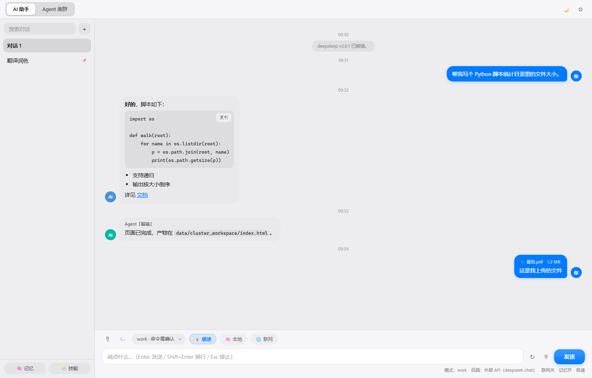
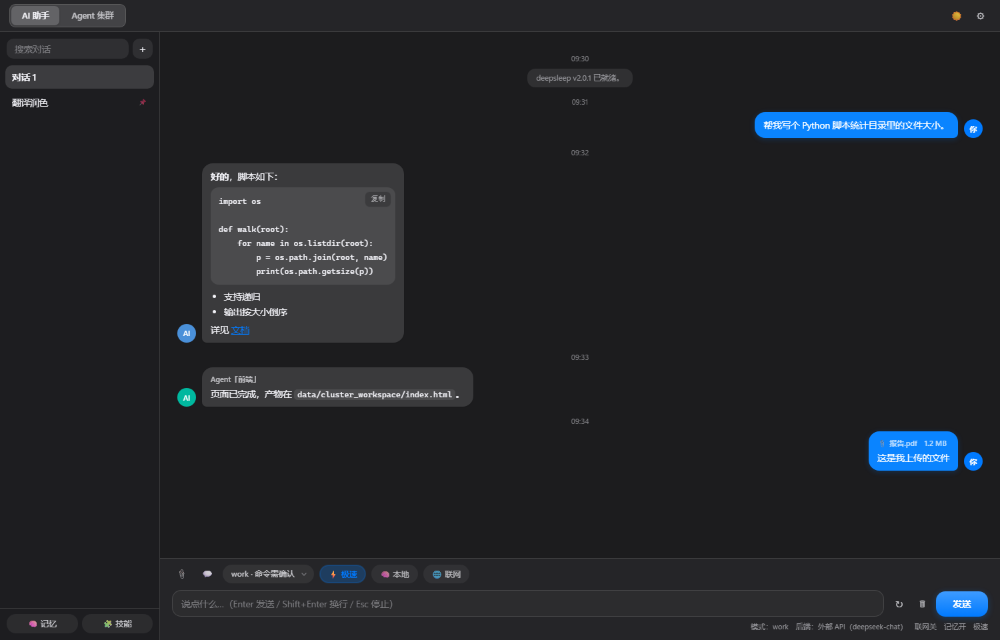

deepsleep（深眠）不只会聊天：它能读写你电脑上的文件、跑命令、搜网络、做带来源的深度研究、 看图、画图，还能长期记住你的偏好。内核与界面分离，界面是纯 HTML —— 桌面上跑、浏览器里也跑。
智谱开放平台（open.bigmodel.cn）的免费模型全家桶，客户端与网页版都已内置预置项；网页版还内置了一把免费 Key，打开就能用。
日常对话、写代码、改文档、当 Agent 的大脑。支持流式输出，长上下文。
把截图、照片、表格图片丢给它：认字、读懂界面、总结图表、照着图写代码。
一句话出图，生成的图片会存到 data\images\，聊天里直接预览。
免费模型有并发限流，人多了会排队；把自己的 Key 填进 ⚙ 设置就能走自己的额度（Key 只存在你浏览器/本机）。
不是「告诉你怎么做」，而是直接做完再给你结果。
快问快答用「网络搜索」；要调研就交给「深度研究」：它自己拆题、多轮搜索、抓正文，最后写出带来源的报告存到 data\research\。
整理资料、批量改名、跑脚本、装依赖。work 模式每一步先问你，boom 模式全自动。
你的习惯、项目背景、常用路径写进记忆，以后每轮对话都自动带上。
把常做的事存成技能与快捷指令，一句话触发整套流程；Agent 集群还能分角色同时干活。
一个随时可拖动的桌面小浮窗，不用开主窗口也能派活、看进度。
客户端自己检查新版本，国内走 Gitee、国外走 GitHub，装完自动重启，不用你管。
界面是 HTML + CSS 写的，macOS 风格，深浅色跟随系统。


适合「不想安装完整客户端」或「想在手机 / 另一台电脑上遥控本机」的人。
deepsleep-core.exe
窗口里会打印端口与配对令牌，并自动打开本机首页。
本机首页点「内核版网页」即可；在外面就用 这个页面，填端口 + 令牌。
也可以直接把 #p=端口&t=令牌 拼在后面打开。
换令牌：deepsleep-core.exe --new-token；换端口：--port 8888。
全部走 GitHub Releases，国内可换 Gitee 镜像。客户端支持 OTA：装上以后升级不用再来这页。
| 文件 | 说明 | |
|---|---|---|
deepsleep-Setup.exe | 安装版（推荐）：自动装到本机、带开始菜单与 OTA 静默升级 | 下载 |
deepsleep-2.2.0-win-x64.zip | 便携版：解压就能跑，不写注册表 | 下载 |
deepsleep-core-2.2.0-win-x64.zip | 内核版：解压即用，配合网页端操控本机 | 下载 |
| 网页版 | 不用下载，直接用浏览器打开 | 打开网页版 |
第一次运行 Windows 可能提示「未知发布者」，点「更多信息 → 仍要运行」即可。安装包 SHA256 写在 Release 说明里。